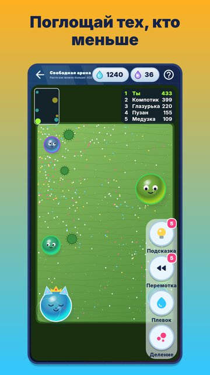

Слайм Арена
Маленькая живая капля геля на кухонном столе. Ешь цветные капли, расти — и поглощай всех, кто меньше тебя. Бульк!
«Слайм Арена» — аркада «расти и поглощай»: веди слайма пальцем, собирай еду и становись больше — Капелька, Лужица, Слайм, Громила, Гигант и Титан во весь экран. Смешивай цвета: синий с жёлтым даёт зелёный рывок, красный с жёлтым — магнит, красный с синим — броню. Плюйся массой, делись надвое, уходи от гигантов и догоняй беглецов. Между раундами — Лаборатория слаймов: мни своего слайма, прокачивай силы и собирай коллекцию.

- 200 раундов по 1–3 минуты на 10 аренах: кухонный стол, мокрый сад, лаборатория, кондитерская, пляж, ледяная пещера, вулкан, ночной неон, космос и тронный зал.
- Боссы и мини-боссы: босс каждый 20-й раунд — от Желейного Короля до Королевы Слизи, мини-босс и трудный раунд каждый 10-й.
- 24 вида слаймов со своими умениями: ягодный, медовый, ртутный, лавовый, призрак, галактика и другие.
- 72 окраса и наряда: мордочки, узоры и шапки — котик, панда, арбуз, звёздочки, короны.
- 16 видов хитрых соперников-ботов со своими именами; сетевой игры нет.
- Перемотка на 5 секунд назад и подсказка «Куда плыть», когда трудно.
- Свободная арена без конца и свой рекорд, Арена дня, ежедневные задания и праздники.
- Играй без интернета, на русском и английском.
Бесплатно, с рекламой: видео за награду — только по желанию, межстраничная реклама — только после победы и никогда во время раунда. По желанию — одно напоминание, если не заходил неделю; выключается в настройках. Вырасти в гиганта и стань королём арены!